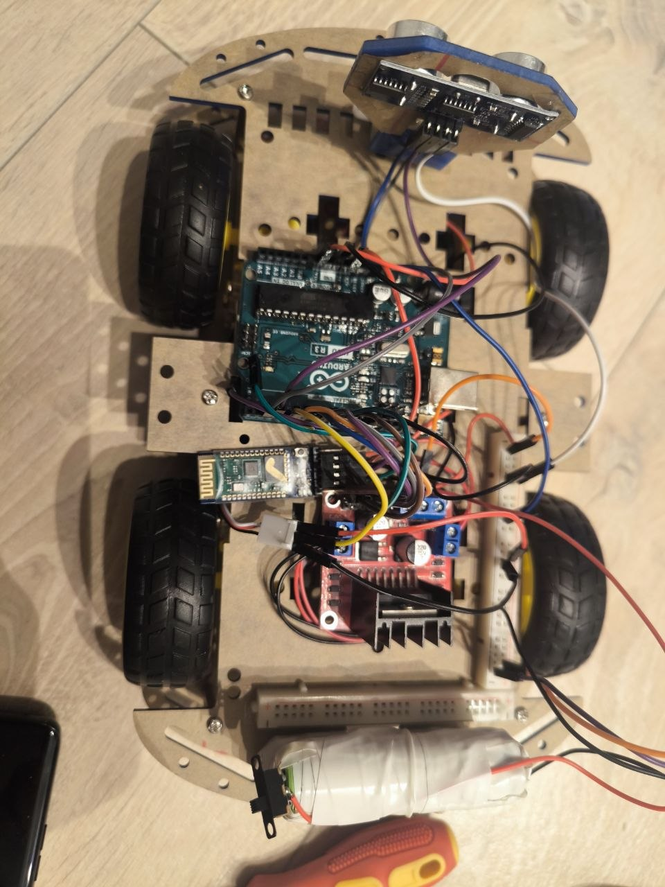

Arduino-bil
Grunnleggende oppsett, montering og programmering av en bil som har som funksjon å kjøre fremover til den møter på et hinder. Det er mulighet for videre oppgradering av denne bilen, for eksempel ved å legge til programvare for svinging eller Bluetooth-styring.
